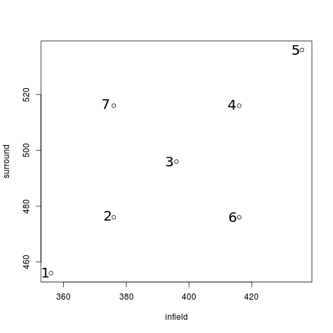
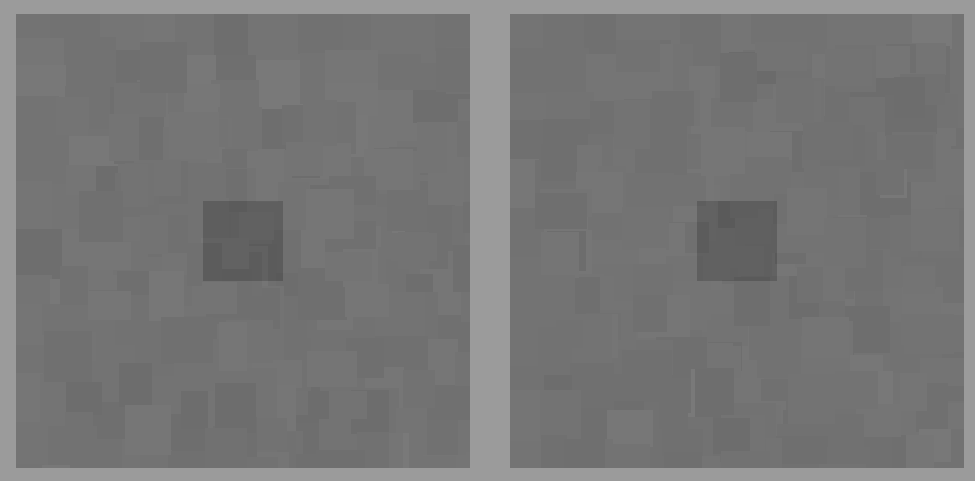
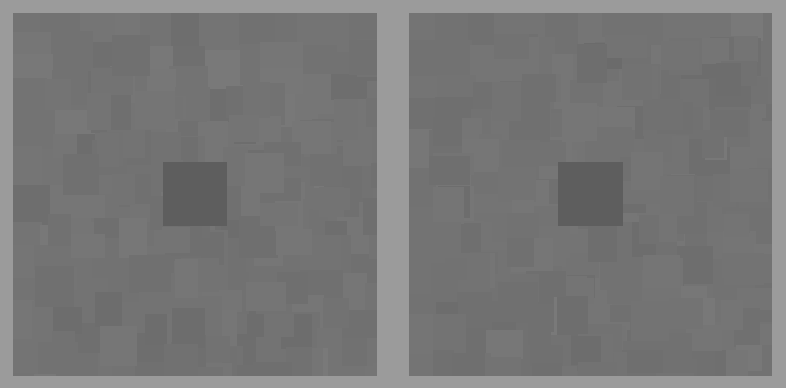
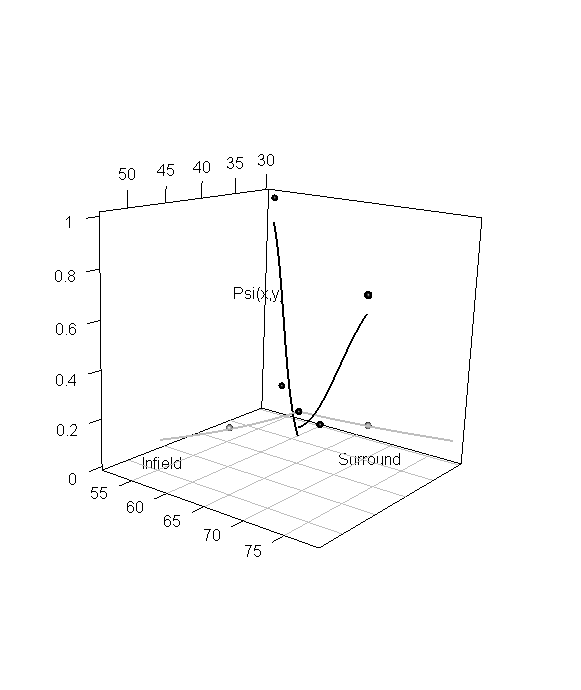
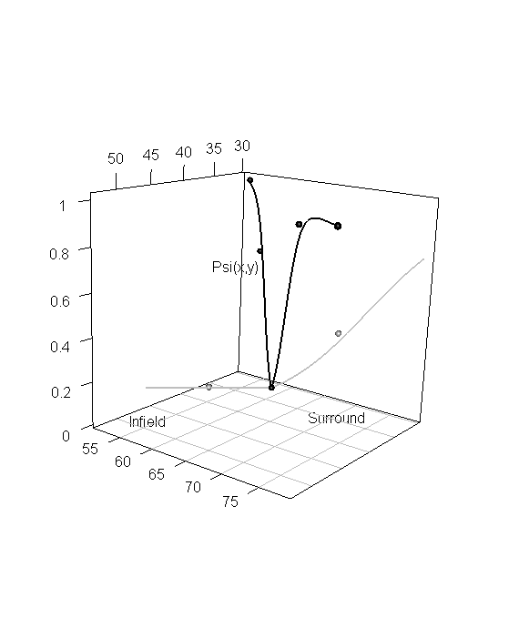

Experiment 3:
With transparent infield (revealing Mondrian background behind).
The transparency is achieved by simply adding a constant value to the centre, such that the mean would be the infield value.
At first we used randomised Mondrians, but this made it impossible in practice (shown in later results) because the two stimuli that should be the same, appeared too differently. We will repeat the experiment without randomised Mondrians (i.e. all with the same pattern, by using the same seed values).
Experiment 4:
With non-transparent infield (but still with Mondrian surround to make this evident).
The purpose is to investigate the effect of perceived transparency, when compared with Experiment 3.
This was okay for the current data, and actually had no violations of regular minimality at all.
Both experiments used the following set of stimuli:
| Number | 1 | 2 | 3 | 4 | 5 | 6 | 7 |
| Infield | 356 | 376 | 396 | 416 | 436 | 416 | 376 |
| Surround | 456 | 476 | 496 | 516 | 536 | 476 | 516 |
Each stimuli was matched with the others to produce 49 stimuli pairs. Each pair of stimuli (of the 49) was displayed 80 times.
When randomisation of the Mondrian was used, the Mondrians were random for all the stimuli pairs, but not for the times they were re-displayed.
Plot of surround/infield ratios:
Example stimuli for Experiment 3 (with randomised Mondrians):
Example stimuli for Experiment 4:
VP01:
| ` | 1 | 2 | 3 | 4 | 5 | 6 | 7 |
| 1 | 0.163 | 0.350 | 0.312 | 0.988 | 0.787 | 0.988 | 1.000 |
| 2 | 0.025 | 0.062 | 0.050 | 0.200 | 0.938 | 0.537 | 0.938 |
| 3 | 0.012 | 0.012 | 0.112 | 0.100 | 0.662 | 0.688 | 0.938 |
| 4 | 0.225 | 0.125 | 0.050 | 0.175 | 0.463 | 0.625 | 0.600 |
| 5 | 0.650 | 0.263 | 0.438 | 0.225 | 0.175 | 0.163 | 0.487 |
| 6 | 0.287 | 0.150 | 0.325 | 0.125 | 0.375 | 0.200 | 0.125 |
| 7 | 0.938 | 0.838 | 0.775 | 0.825 | 0.087 | 0.250 | 0.125 |
VP02:
| ` | 1 | 2 | 3 | 4 | 5 | 6 | 7 |
| 1 | 0.087 | 0.425 | 0.250 | 1.000 | 1.000 | 1.000 | 0.988 |
| 2 | 0.487 | 0.338 | 0.150 | 0.700 | 0.963 | 0.963 | 1.000 |
| 3 | 0.037 | 0.000 | 0.025 | 0.112 | 0.838 | 0.838 | 0.975 |
| 4 | 0.900 | 0.675 | 0.700 | 0.112 | 0.600 | 0.700 | 0.925 |
| 5 | 1.000 | 0.975 | 0.988 | 0.938 | 0.650 | 0.062 | 0.188 |
| 6 | 0.975 | 1.000 | 0.912 | 0.388 | 0.125 | 0.200 | 0.112 |
| 7 | 1.000 | 1.000 | 0.988 | 1.000 | 0.637 | 0.925 | 0.362 |
Psychometric functions for VP01:
Psychometric functions for VP02:
The data was too bad to effectively analyze, VP01 had violations of regular minimality for every data point, and VP02 lost the majority of data points.
This was likely because the experiment was too difficult. This was probably due to the randomisation of the Mondrian background even within the transparent infield, which meant that two “identical” infields were actually significantly different even if the mean luminance was the same.
To prevent this in the future, one could re-run the experiment using the same seed for all stimuli, although this risks the subjects simply learning the 7 stimuli. Or use any other means to make the experiment less difficult, for example, increasing the ratio between infield and surround, etc.
VP01:
| ` |
0.1125 0.2375 0.9125 0.9000 0.9750 0.6875 0.9625 |
0.2250 0.1000 0.9250 0.3000 0.6000 0.7625 0.9125 |
0.9750 0.9125 0.0375 0.7250 0.3750 1.0000 0.4875 |
0.4250 0.1875 0.7875 0.1750 0.3375 0.7125 0.8625 |
0.8000 0.4875 0.6750 0.2625 0.1000 0.8250 0.3375 |
0.5750 0.7500 0.9750 0.8000 0.8875 0.2000 0.9750 |
0.9500 0.8500 0.5250 0.6125 0.2625 0.9750 0.2125 |